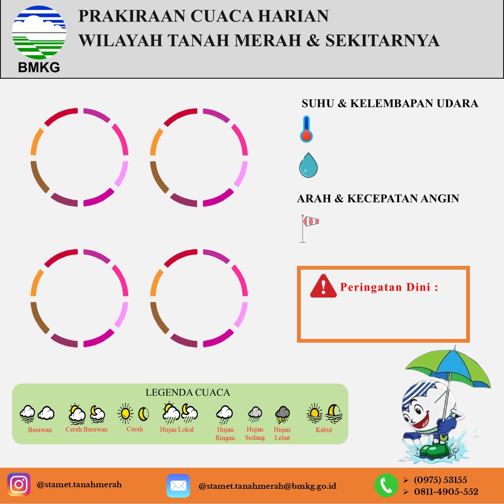

Live Ticker
🕒 UTC: 00:00:00
|
⏰ WIT: 00:00:00
Welcome to Command Center
Platform terintegrasi untuk pembuatan informasi cuaca harian dan sandi penerbangan Stasiun Meteorologi Kelas III Tanah Merah (WAKT).
Bulan:
0
METAR/SPECI
0
Total TAFOR
0.0%
Akurasi TAFOR
-
Sync Terakhir
Monitoring Sandi Realtime (5 Terakhir)
Auto-Sync
METAR & SPECI Aktual
Memuat METAR...
TAFOR Prakiraan
Memuat TAFOR...
Input Data Cuaca Harian


BERLAKU UNTUK 13 MEI 2026
PAGI
SIANG
MALAM
DINI HARI
BERAWAN
HUJAN RINGAN

HUJAN LOKAL
BERAWAN
24 - 30°C
60 - 95%
TIMUR - SELATAN
05 - 20 KM/JAM
05 - 20 KM/JAM
NIL
KONFIGURASI SANDI UTAMA
/
GENERAL DATA
❖ Angin & Visibility
❖ Cuaca & Awan
TREND EVOLUTION DATA
⏱️ AUTOSEND TAFOR
Jam Tembak (Lokal):
Menunggu instruksi...
*Peringatan: Selama Autosend, jangan tutup halaman web and pastikan laptop tidak masuk mode Sleep/Standby.
Hasil...
LOG HISTORY TAFOR
🔥 GENERATOR LAPORAN HOTSPOT
Sistem Generator data titik panas otomatis untuk wilayah Kabupaten Boven Digoel.
REKAP DATA HISTORIS KUSTOM
📊 VERIFIKASI TAFOR
Sistem verifikasi TAFOR otomatis.
Bulan:
1. Arah Angin
0%
2. Kecepatan Angin
0%
3. Visibility
0%
4. Cuaca
0%
5. Jumlah Awan
0%
6. Tinggi Awan
0%
AKURASI TAF
0%
Pilih Tanggal
📋 LEMBAR KERJA EVALUASI: TABEL 1
Prakiraan: Waiting Command...
| Tanggal | Jangka Waktu | Change Group | Prakiraan TAFOR | Pengamatan (METAR / SPECI) | Hasil Verifikasi & Skor Kelulusan (H) | |||||||||||||||||||
|---|---|---|---|---|---|---|---|---|---|---|---|---|---|---|---|---|---|---|---|---|---|---|---|---|
| A | B1 | B2 | C | D | E | F | A | H | B1 | H | B2 | H | C | H | D | H | E | H | F | H | ||||
| Belum ada kalkulasi TAFOR harian. Tekan tombol 'Verifikasi'. | ||||||||||||||||||||||||
📑 GENERATOR LAPORAN BULANAN
Sistem akan menarik data cuaca otomatis dari database lokal dan menggabungkannya dengan data manual ATC.
Waktu Laporan
Pergerakan Pesawat (Data ATC)
🔄 KONVERTER PDF ACS KE EXCEL
Unggah PDF ACS dari BMKGSoft. Sistem akan mengekstrak data ke Template Model A-E.